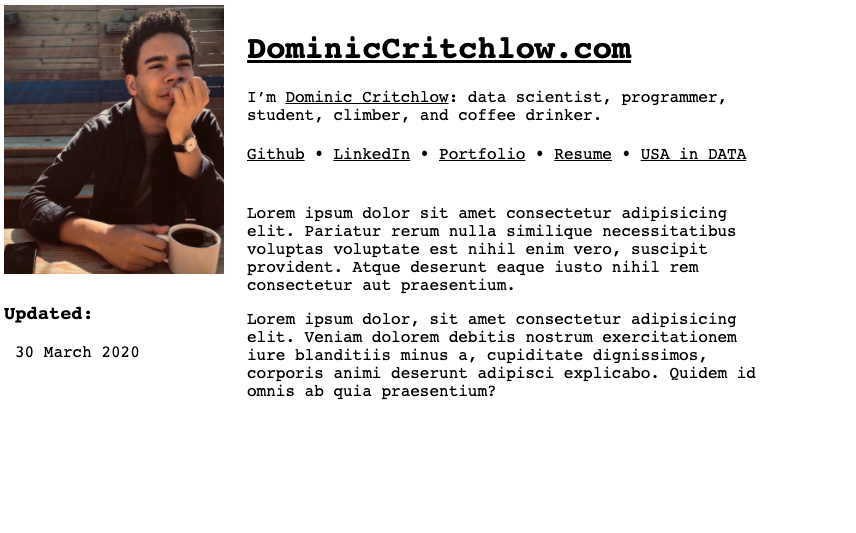

This is a blog posts
2020-04-08 Wednesday
This is part of the documentation of learning how to build a webpage. I have set up the general framework for this webpage. It consists of two html pages this one and an about page. I have few items linked in the header that I will eventually move over to this webpage once I learn how to construct the appropriate sections.
I am hosting this page through Google Firebase, and version controlling all this code on my public github.
Short one today but I am going to experiment by making this blog post in an easier format for me to edit. Possibly RSS feed as well. We will see.
Pause.
Little update. Went to publish this first page but you know how things go the first go around. Should have thought about the CSS when I started this. Example: